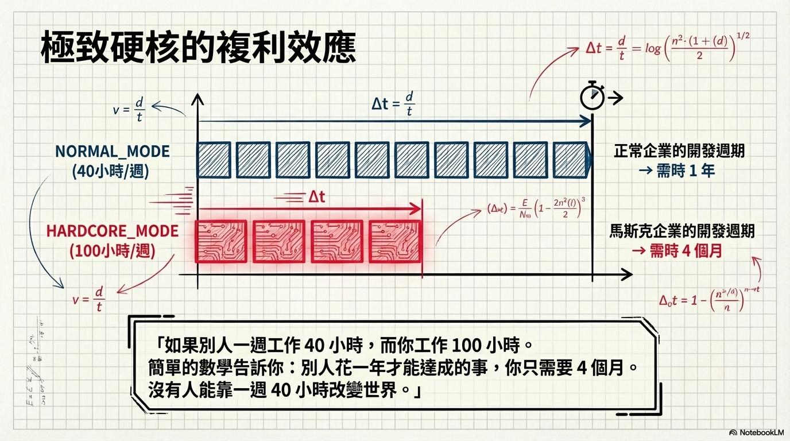

「如果傳統思維讓你的使命變得不可能，那麼非傳統思維就是必要的。」
Elon 擔任 CEO 不是因為享受權力，而是因為責任感。他強調自己經常獲得過多的關注和讚譽，真正讓公司成功的是各層級極具才華的員工。
他對 CEO 角色的定義很殘酷：你得到的是公司裡所有最糟糕問題的濃縮。不需要花時間在進展順利的事上，只需要處理別人解決不了的、最棘手最痛苦的問題。面對失敗時，即使內心感覺糟透了，他仍然必須振作團隊。
在 Tesla 最艱難的時期，Elon 不是睡在會議室裡，而是刻意睡在工廠地板上——因為在會議室裡沒人看得到他。他醒來時滿身機油和鐵屑的味道。
他的邏輯很簡單：「如果 CEO 願意承受這種程度的痛苦，我也可以。」當你要求團隊全力以赴時，你不能自己躲在舒適的辦公室裡。就像戰爭中的將軍——沒有人會為宮殿裡的王子流血，但如果看到將軍在前線，士兵就會拼命。
六歲時，Elon 被禁足卻執意要去表哥的生日派對。他從保姆身邊逃跑，獨自走了十到十二英里穿越南非首都，花了四個小時。當媽媽發現他時，他爬上樹拒絕下來，直到媽媽承諾不處罰他。
在南非長大的 Elon 經歷了極端的校園暴力——曾經被打到差點喪命。從六歲到十六歲，他不斷被霸凌和毆打，部分原因是他替另一個被欺負的孩子出頭。這些經歷塑造了他極高的痛苦承受力。
Elon 的朋友 Bill Lee 說創業就像「吃玻璃、凝視深淵」。「凝視深淵」意味著你每天都面臨公司隨時可能滅亡的恐懼；「吃玻璃」意味著你必須解決公司需要你解決的問題，而不是你想解決的問題。
SpaceX、Tesla 和 SolarCity 長期處於瀕死狀態。但 Elon 的建議是：如果事情足夠重要，即使失敗機率很高也要做。先接受最可能的結果是失敗，如果你仍然感到非做不可——那就去做。
"Nobody bleeds for the prince in the palace. Get out there on the front line. Show them that you care and that you're not in some plush office somewhere."
沒有人會為宮殿裡的王子流血。走到前線去，讓他們看到你在乎，而不是窩在某個豪華辦公室裡。
"Starting a company is like eating glass and staring into the abyss."
創業就像吃玻璃、凝視深淵。
"A major failure mode is a high ego-to-ability ratio. If your ego-to-ability ratio gets too high, then you've broken the feedback loop to reality."
一個重大的失敗模式是自負與能力的比率過高。一旦這個比率太高，你就打破了與現實的回饋迴路。

成功需要的不是天賦或運氣，而是願意承擔最糟糕的問題、睡在地板上、吃玻璃凝視深淵——然後繼續前進。